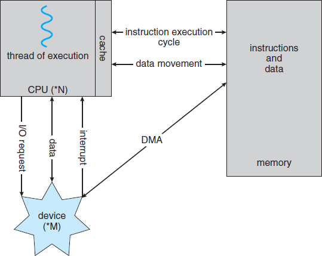

Storage is only one of many types of I/O devices within a computer. A large portion of operating system code is dedicated to managing I/O, both because of its importance to the reliability and performance of a system and because of the varying nature of the devices. Next, we provide an overview of I/O.
A general-purpose computer system consists of CPUs and multiple device controllers that are connected through a common bus. Each device controller is in charge of a specific type of device. Depending on the controller, more than one device may be attached. For instance, seven or more devices can be attached to the small computer-systems interface (SCSI) controller. A device controller maintains some local buffer storage and a set of special-purpose registers. The device controller is responsible for moving the data between the peripheral devices that it controls and its local buffer storage. Typically, operating systems have a device driver for each device controller. This device driver understands the device controller and provides the rest of the operating system with a uniform interface to the device.
To start an I/O operation, the device driver loads the appropriate registers within the device controller. The device controller, in turn, examines the contents of these registers to determine what action to take (such as “read a character from the keyboard”). The controller starts the transfer of data from the device to its local buffer. Once the transfer of data is complete, the device controller informs the device driver via an interrupt that it has finished its operation. The device driver then returns control to the operating system, possibly returning the data or a pointer to the data if the operation was a read. For other operations, the device driver returns status information.
This form of interrupt-driven I/O is fine for moving small amounts of data but can produce high overhead when used for bulk data movement such as disk I/O. To solve this problem, direct memory access (DMA) is used. After setting up buffers, pointers, and counters for the I/O device, the device controller transfers an entire block of data directly to or from its own buffer storage to memory, with no intervention by the CPU. Only one interrupt is generated per block, to tell the device driver that the operation has completed, rather than the one interrupt per byte generated for low-speed devices. While the device controller is performing these operations, the CPU is available to accomplish other work.
